Numerical Model
FEA model setup and mesh generation for the composite wing structure
Model Import and Setup
3D model of the wing was imported as .step file into the Abaqus CAE preprocessor. To simplify the optimization process, composite layups of certain wing areas were grouped. For the wing skin between the front and aft spar caps, 3 layup groups were created: G1, G2 and G3, going from the root of the wing outwards. For G1 and G2 layup groups, ply drop-off was taken into consideration and thus they were made to extend to half the section outwards. These layup extensions were added to minimize the stresses that would otherwise happen if the ply drop-off happened in the area where the skin connects to the ribs. Skin/Stringer overlaps in those areas were also grouped within the three groups: G1S, G2S and G3S, S denoting 'stringers'. Leading edge skin was divided into 12 layups (to add some flexibility to the model - even though one layup would suffice), trailing edge into 4, spar caps into two layups – compressive and tensile, or upper and lower cap – C1 and C2 respectively; spar webs were defined with only one layup, the same as skin stringers and top-to-bottom stringers added in the trailing edge. Ribs were also defined through one layup. Overhang area has the same layup properties that their section counterparts have (overhang middle skin has the same layup as G1 group, overhang upper cap layup is equal to C1, etc…). Out of all the stiffening elements, only the wingbox stringers were modeled to have both the cap and a web, to model the failure index plot as precisely as possible, especially because they're located in critically loaded area of the wing.
For the initial model, all of the layups were made to be quasi-isotropic: [+-45/0/90]s, with exceptions of ribs and spar webs, which had 5 mm of nomex honeycomb core inserts, and skin stringers which had symmetrical layup consisting of +-45 degree plies.
Layup label definitions

Composite layup sections
Optimization analyses will be run using a static solver. To model the aileron hinge moments, continuum distributing coupling was defined between two inner and two outer rib edges on the trailing edge side and with a uniform weighting method. Aileron hinge force was then divided by half and applied at each of the reference points.

Aileron reference point coupling
Pressure field resulting from lift was applied to lower section of the wing using an analytical field and a 12G loading magnitude. Encastre was applied to the root of the wing.
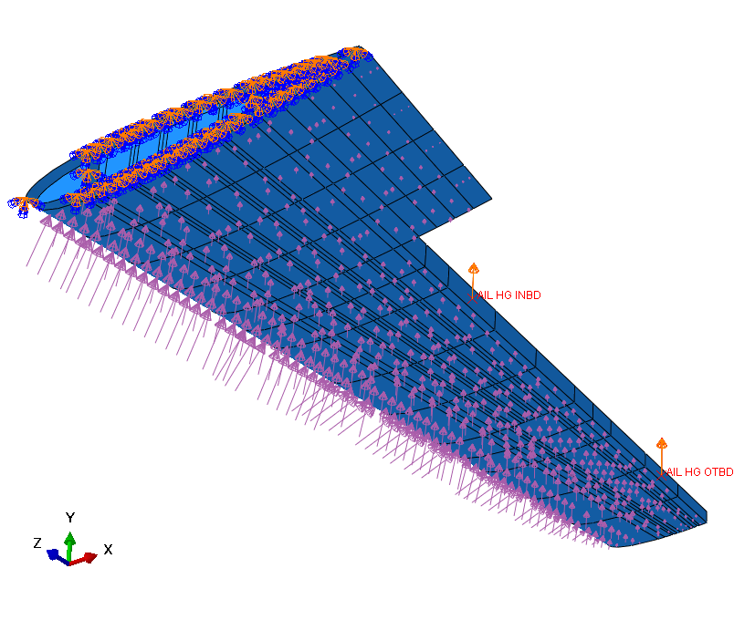Load and boundary conditions
Model was meshed using 32 340 elements and 31 021 nodes. 32 326 of the elements were S4R and 14 were S3 elements to help with the mesh of curved and narrow sections of the geometry. Average aspect ratio of the mesh elements was 1.41. The model contained elements with AR>2 but considering those elements were present in areas not significant in respect to loading, mesh refinement wasn't carried out – same goes for S3 elements. Below are the photos showing mesh throughout the wing geometry. Wingbox skin mesh was represented with section colors to better show how the mesh transitions spanwise.
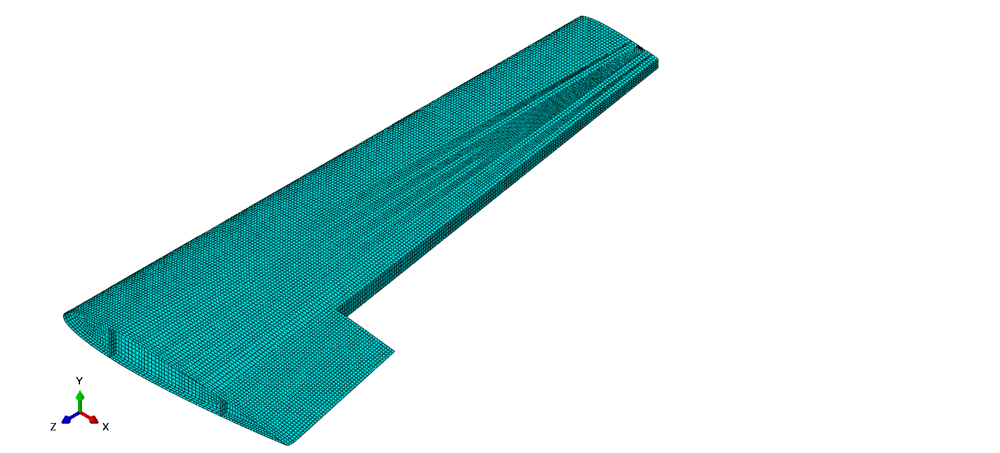Overall wing mesh

Inner wingbox skin mesh

Middle wingbox skin mesh
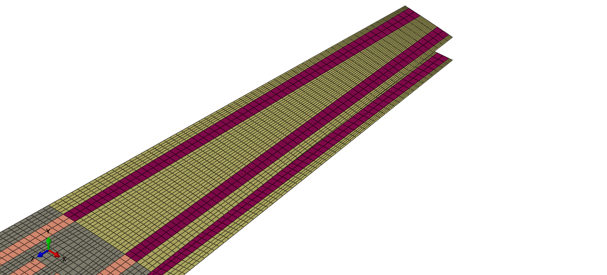Outer wingbox skin mesh
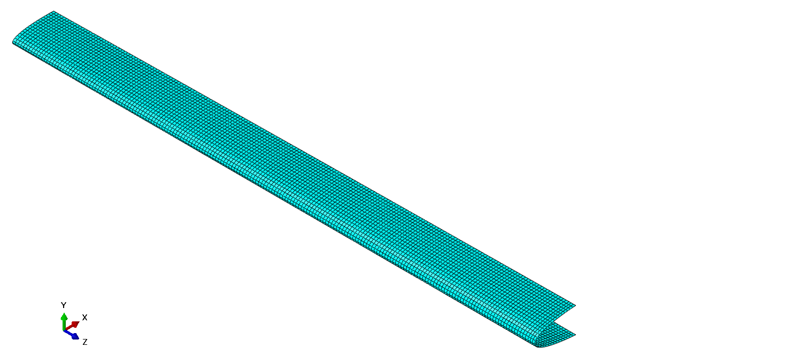Leading edge skin mesh

Root side leading edge skin mesh
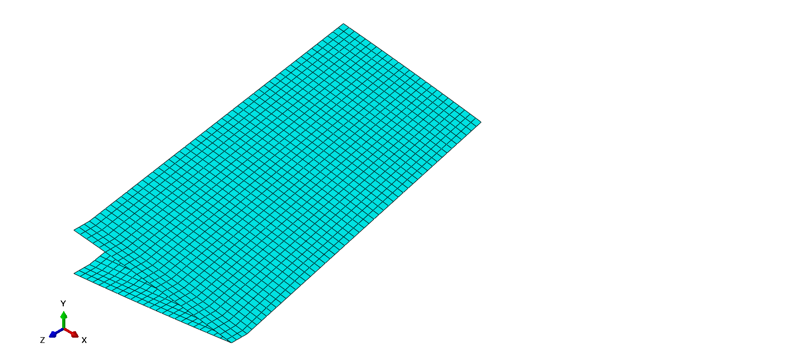Trailing edge skin mesh
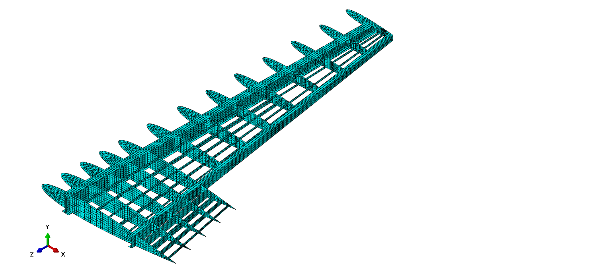Internal wing substructure mesh
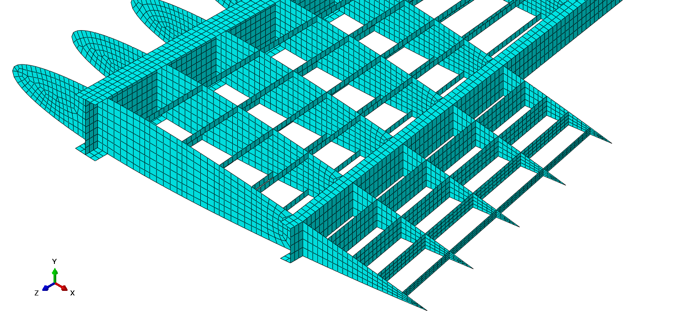Root side internal wing substructure mesh
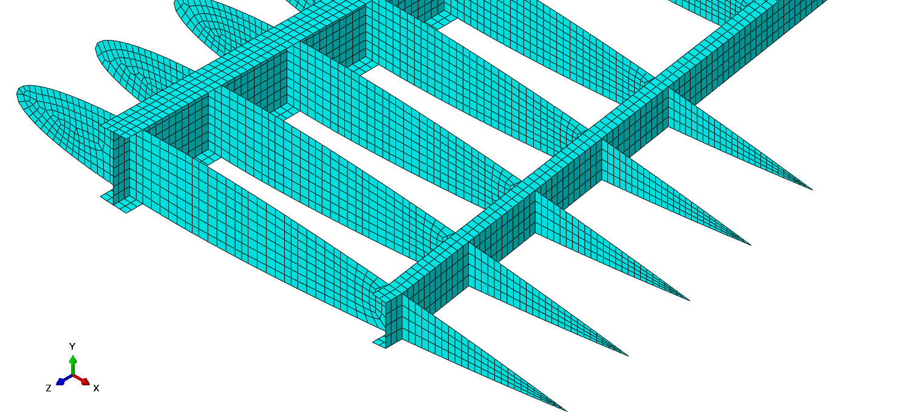Root side internal substructure mesh without the stringers

Overall spars mesh
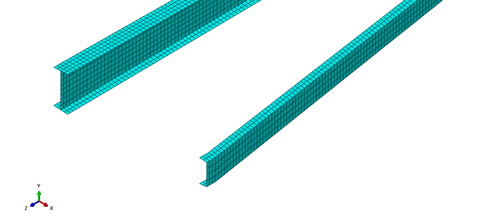Root side spars mesh
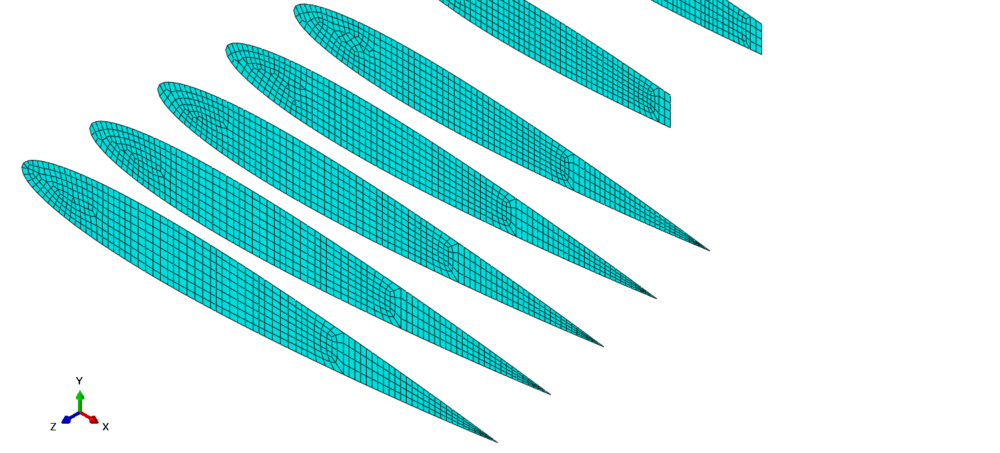Inner section ribs mesh
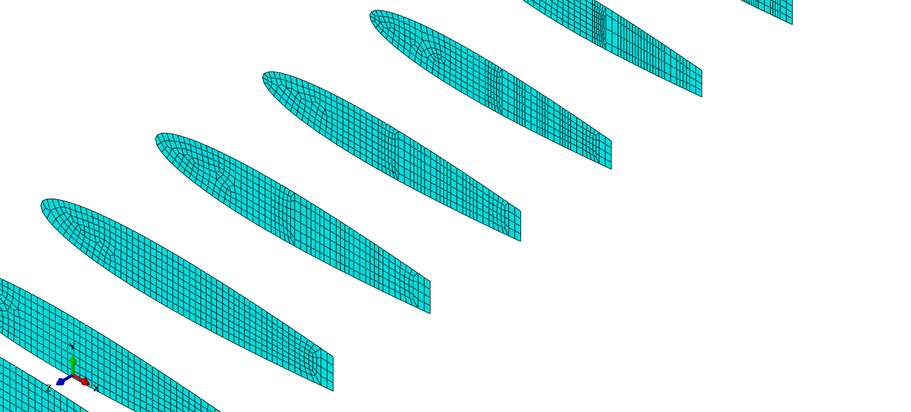Middle section ribs mesh
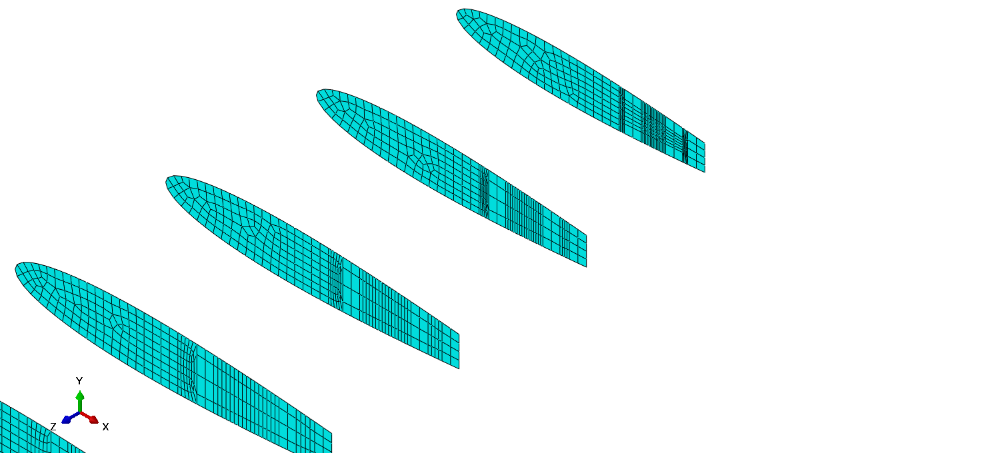Outer section ribs mesh

Overall stringers mesh
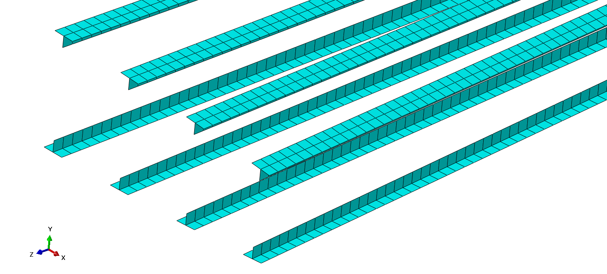Root side stringers mesh

Overall trailing edge mesh

Elements with aspect ratio greater than 2 (Highlighted)